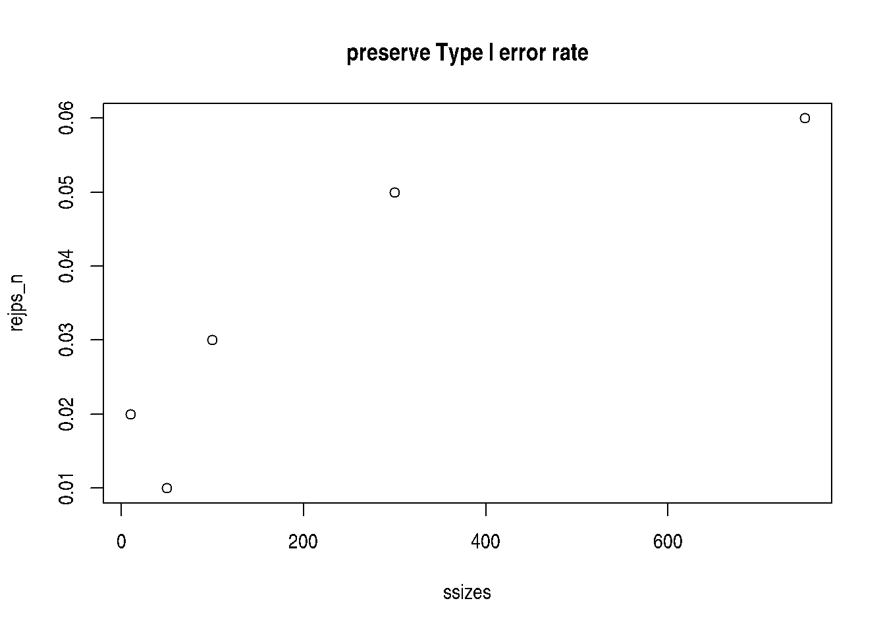

S4_inference: Definitions and exercises
Vincent J. Carey, stvjc at channing.harvard.edu
July 03, 2022
Source:vignettes/S4_hypothesis_testing.Rmd
S4_hypothesis_testing.RmdInference
The fairness hypothesis
Let \(C_1\) denote the suit of the top card revealed after a fair shuffle. We can state a hypothesis about the fairness of the deck under repeated draws of top card after shuffling as
\[ H_0: Pr(C_1 = \heartsuit) = Pr(C_1 = \diamondsuit) = Pr(C_1 = \clubsuit) = Pr(C_1 = \spadesuit) = 1/4 \]
In a frequentist framework for statistical inference, we define procedures for testing (null) hypotheses with specified error probabilities.
A Type I error occurs when the null hypothesis is true but the test results in the assertion that it is false. Traditionally we try to keep the probability of Type I errors below 5%.
A Type II error occurs when the null hypothesis is false but the test does not result in an assertion that it is false. Traditionally we try to keep the probability of Type II errors below 20%.
Exercise
1: Propose a procedure for testing \(H_0: Pr(C_1 = \heartsuit) = 1/4\). Assume you have the results of top card draws from N shuffles. What would such a procedure look like?
suppressPackageStartupMessages({
suppressMessages({
library(CSHstats)
})
})
d = build_deck()
shuffle_deck = function(d) sample(d, size=length(d), replace=FALSE)
heart_sign = function() "\U2661"
set.seed(4141)
top_draw = function(d) shuffle_deck(d)[1]
N = 100
mydat = replicate(N, suits(top_draw(d))==heart_sign())
phat = function(dat) sum(dat)/length(dat)
phat(mydat)## [1] 0.35With 100 shuffles we have an estimate of the probability of a heart. Is our experimental result consistent with \(H_0\)?
With a larger sample size:
## [1] 0.243Let’s use the procedure |phat(dat)-.25|>.01 as our criterion for
rejecting $H_0 : \(Pr(C_1 = \heartsuit)\). What is the Type I error rate
for a fair deck for the experiment based on 100 shuffles?
N = 100
NSIM = 1000
tsts = replicate(NSIM,
abs(mean(replicate(N, suits(top_draw(d))==heart_sign()))-.25)>.01)
mean(tsts)## [1] 0.911Parameterize the “delta”, which was 0.01 in the previous run. Let’s get the rejection rate estimates for two sample sizes:
prej = function(delta=.01, nullval=.25, NSIM, N) {
mean(replicate(NSIM,
abs(mean(replicate(N, suits(top_draw(d))==heart_sign()))-nullval)>delta))
}
prej(delta=.02, NSIM=1000, N=100)## [1] 0.655
prej(delta=.02, NSIM=1000, N=500)## [1] 0.323Our home-cooked test has a Type I error rate that is much too high for standard practice, and depends on the sample size.
Let’s instead use the built in procedure for testing hypotheses with binomial outcomes.
brej = function(deck, nullval=.25, alpha=0.05, NSIM, N) {
replicate(NSIM, {
dat = replicate(N, suits(top_draw(deck))==heart_sign())
binom.test(sum(dat), N, nullval)$p.value < alpha
})
}
mean(brej(d,NSIM=1000, N=100))## [1] 0.054
mean(brej(d,NSIM=1000, N=500))## [1] 0.06
mean(brej(d,NSIM=1000, N=100, alpha=0.01))## [1] 0.006We have an indication here that the procedure stabilizes the Type I error rate for different designs (sample sizes) and can accommodate different significance levels.
Power curve
Now we want to understand how good a given experimental design is at identifying departures from the null. Make a biased deck.
##
## 10 2 3 4 5 6 7 8 9 A J K Q
## ♡ 1 1 1 1 2 1 1 1 1 1 1 1 1
## ♢ 1 1 1 1 1 0 1 1 1 1 1 1 1
## ♣ 1 1 1 1 1 1 1 1 1 1 1 1 1
## ♤ 1 1 1 1 1 1 1 1 1 1 1 1 1What kind of sample size do we need to get good power to detect this exception?
ssizes = c(10,50, 100, 300,750)
rejps = sapply(ssizes, function(x) mean(brej(bd, NSIM=100, N=x)))
plot(ssizes, rejps, main="detect one extra heart")
More bias:
##
## 10 2 3 4 5 6 7 8 9 A J K Q
## ♡ 1 1 1 1 2 2 1 1 1 1 1 1 1
## ♢ 1 1 1 1 1 0 0 1 1 1 1 1 1
## ♣ 1 1 1 1 1 1 1 1 1 1 1 1 1
## ♤ 1 1 1 1 1 1 1 1 1 1 1 1 1
rejps = sapply(ssizes, function(x) mean(brej(bd, NSIM=100, N=x)))
plot(ssizes, rejps, main="detect two extra hearts")
rejps_n = sapply(ssizes, function(x) mean(brej(d, NSIM=100, N=x)))
plot(ssizes, rejps_n, main="preserve Type I error rate")